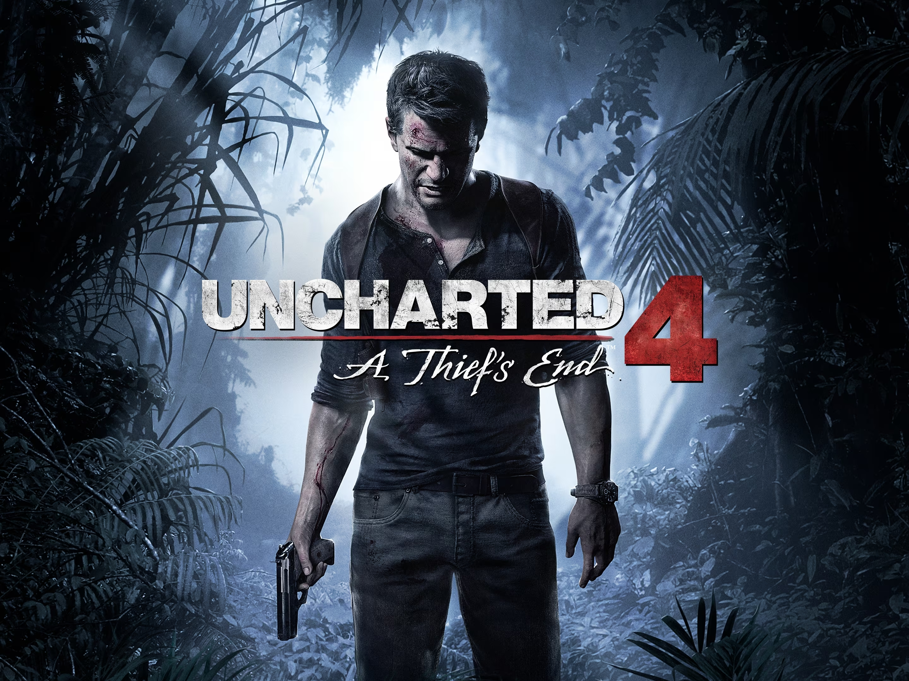
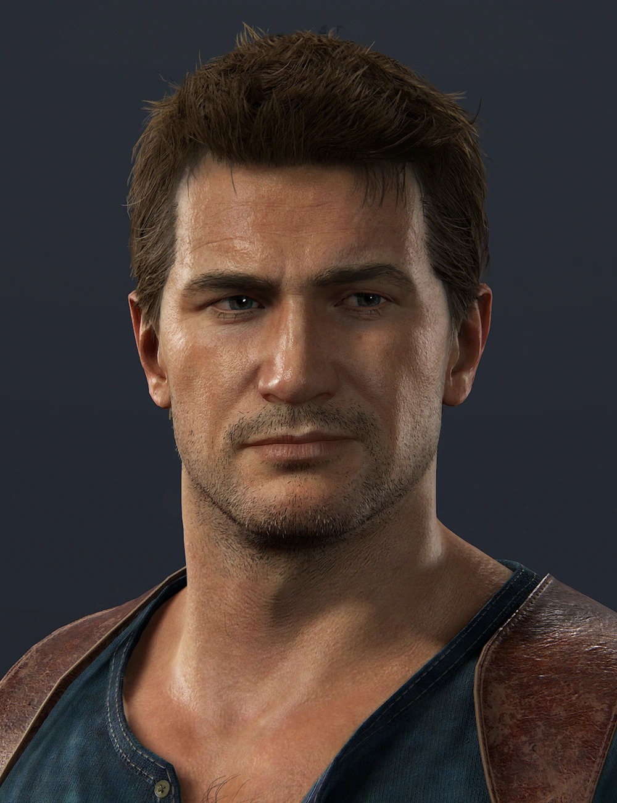
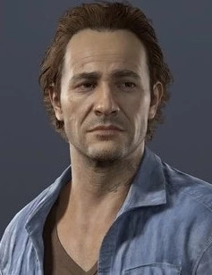
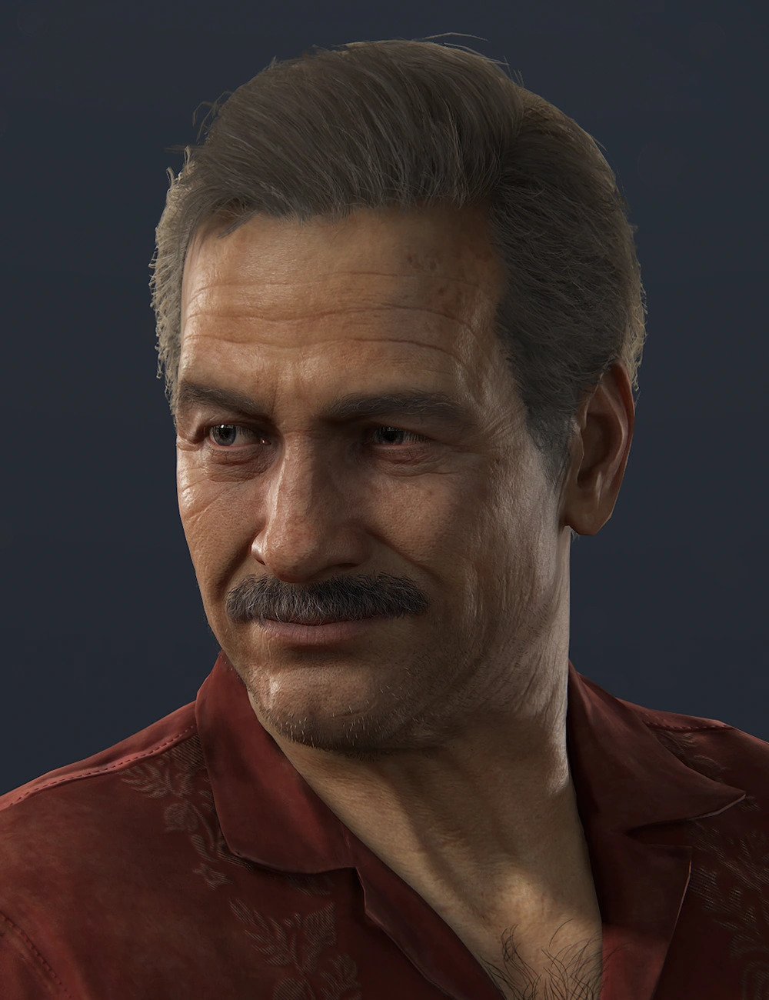
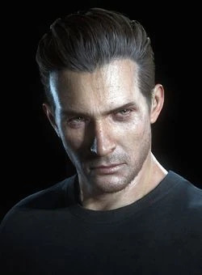
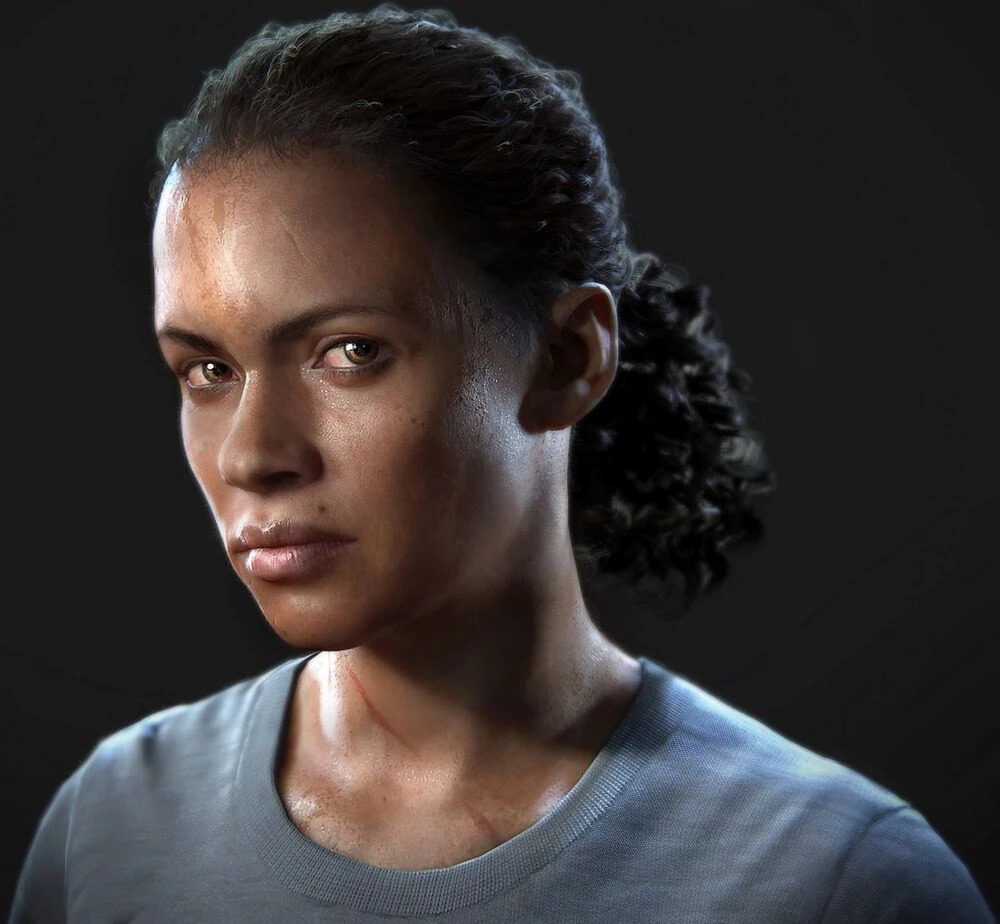

Bienvenido a la aventura
Uncharted 4: El Desenlace de un Ladrón es un videojuego de acción y aventuras desarrollado por Naughty Dog y distribuido por Sony Computer Entertainment, exclusivo para consolas PlayStation 4.
Acompañá a Nathan Drake en su última gran búsqueda de tesoros.
Historia
Han pasado varios años desde su última aventura. Nathan Drake se ha retirado del mundo del saqueo de tesoros, pero no todo queda en el pasado...
Trailer del Juego
Inicio
Nathan Drake vive una vida tranquila y retirada de las aventuras, disfrutando de la paz junto a su esposa. Sin embargo, un regreso inesperado lo obliga a enfrentar su pasado como cazador de tesoros.
Desarrollo
Nathan se embarca en una nueva búsqueda: el legendario tesoro del pirata Henry Avery. A medida que viaja por lugares exóticos y peligrosos, se enfrenta a enemigos poderosos, viejos conflictos y desafíos que pondrán a prueba su determinación.
Final
La aventura lo lleva a descubrir más que oro y reliquias. Nathan deberá tomar decisiones que definirán su futuro y su verdadera identidad, en una historia llena de emoción, acción y momentos inolvidables.
Personajes Principales
| Foto | Nombre | Descripción |
|---|---|---|
|  | Nathan Drake | El protagonista de esta historia, un cazador de tesoros retirado. |
|  | Samuel Drake | El hermano mayor de Nathan, que regresa misteriosamente después de mucho tiempo. |
| Elena Fisher | Periodista y esposa de Nathan, figura clave en su vida. | |
|  | Victor "Sully" Sullivan | Mentor, amigo y figura paterna para Nathan. |
|  | Rafe Adler | El villano principal del videojuego, un exsocio obsesionado con el tesoro. |
|  | Nadine Ross | Líder de la organización militar privada Shoreline, contratada por Rafe. |
Tema Oficial del Juego
Intro del juego
Escena de introducción del videojuego que resume lo sucedido en las 3 anteriores entregas principales de la saga Uncharted.